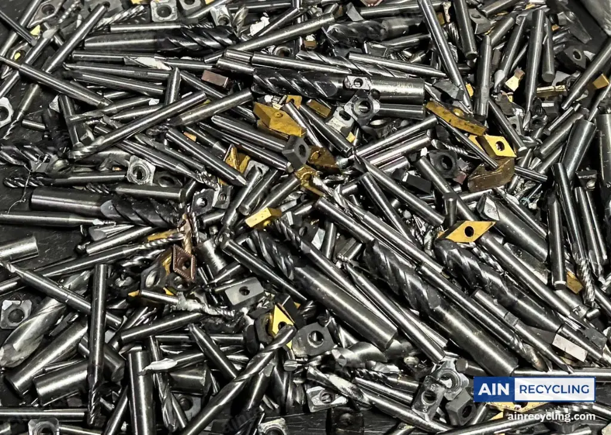

Outils carbure monobloc · tous diamètres
Rachat de forets et fraises carbure : 47 € le kilo.
Outils carbure monobloc de tous diamètres, entiers, usés ou cassés : forets, fraises, alésoirs, tarauds. Ils sont rachetés au poids, au même prix que les plaquettes.

- Prix
- 47 € / kg
- Transport
- À notre charge
- Prix garanti
- 7 jours, dans le mois
- Paiement
- Sous 48 h
Ce que nous rachetons
Tous les outils carbure monobloc.
Nous rachetons
- Forets carbure de tous diamètres, entiers ou cassés
- Fraises : 2, 3, 4 dents et plus, hémisphériques, toriques
- Alésoirs et tarauds en carbure monobloc
Nous ne rachetons pas
- Outils en acier rapide (HSS, HSS-E, HSS-Co)
- Mandrins, pinces et porte-outils en acier
Outils brasés (carbure soudé sur acier) : sur étude, envoyez une photo.
Comment vendre
Trois étapes, de votre atelier à votre compte.
Questions
Les questions sur les forets et les fraises.
Un foret cassé est-il racheté ?
Oui, entier ou cassé, au même prix au kilo : seul le poids de carbure compte.
Comment savoir si mon foret est en carbure ?
Il est nettement plus lourd qu'un foret en acier de la même taille et n'accroche presque pas un aimant. Les marquages « HM », « VHM » ou « carbide » le confirment. Voir notre guide en 3 tests.
Faut-il retirer quelque chose avant l'envoi ?
Seulement ce qui n'est pas en carbure : mandrins, pinces, porte-outils et bagues en acier. Les outils monobloc se vendent entiers.
Rachetez-vous les outils brasés ?
Sur étude : sur un outil brasé, seule la pastille est en carbure, soudée sur un corps en acier. Envoyez-nous une photo : nous vous disons si nous le reprenons, et à quel prix.
Estimation gratuite
Un tiroir plein de forets cassés ?
Envoyez-nous une photo et une idée du poids : nous vous répondons sous 24 h (jours ouvrés).